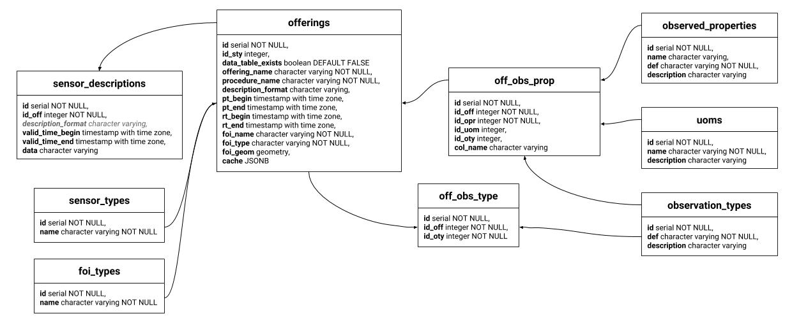
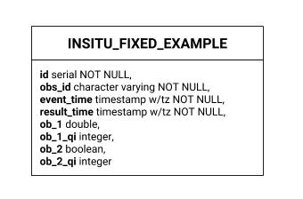
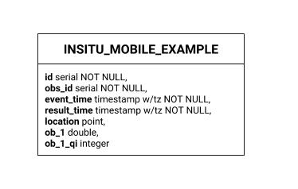
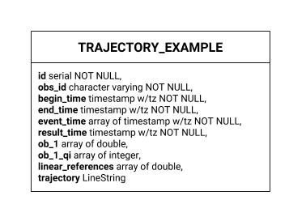
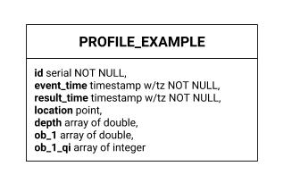
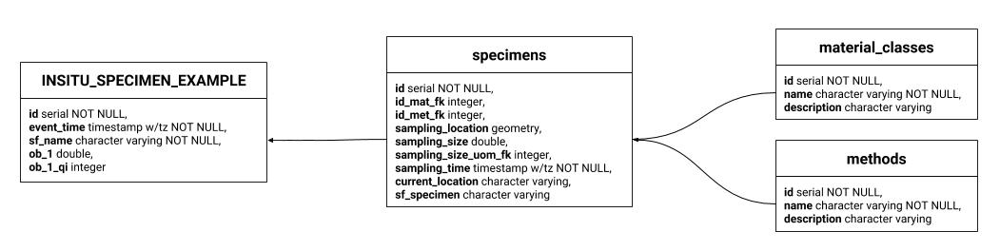

Postgres¶
Here the entity relationship representation of the PostgreSQL implementation.
Default workspace¶
InsertSensor tables¶
As soon an insertSensor request is done, istSOS stores into the followings table the data:
- offerings
- off_obs_type
- off_obs_prop
Depending on the System Types classification a basic table with default columns that will contain the measurements is also created into the schema named as “data”.
Considering that during an insertSensor request there is not an explicit declaration between observableProperty and and the observationType, the relation will be stored during the first insertObservation request.
In particular, during an insertObsevation request, the relation between the observation_types and uoms table and the off_obs_prop will be set. During this operation also in the data table will be added the corresponding columns in accordance to the relation of the off_obs_prop table.
Data containers¶
Each System Types classification is implemented diffently to satisfy particular requirements related to the System Type.
Point TimeSeries Observation¶
Point TimeSeries Observation table structure is the simplest and most common (ex: Meteo Station). The feature of interest is stored inside the offerings table (offerings.foi_geom).
Mobile TimeSeries Observation¶
Mobile TimeSeries Observation table structure looks like the Point TimeSeries Observation, but in addition in the data table the actual position is stored together with measurements (ex: Formula 1 car sending real-time data from sensors at different location and time).
Trajectory Observation¶
The trajectory observation is an O&M pattern where the time series of data is sent together with a SF_SamplingCurve feature of interest representing the trajectory in which the measurements has been done at a certain distance from the beginning.
Note
The benefit of linear referencing models is that the dependent spatial observations do not need to be separately recorded from the base observations, and updates to the base observation layer can be carried out knowing that the dependent observations will automatically track the new geometry (src Introduction to PostGIS).
Profile Observation¶
The profile observation O&M pattern is from the same family of the trajectory observations.The time series of data is sent together with a SF_SamplingCurve feature of interest representing the profile in which the measurements has been done.
Specimen Observation¶
The specimen observation O&M pattern differs from others because the feature of interest is a physical sample taken off at specific location. The data are sent with a reference to the specimen. The specimen is inserted previously.
